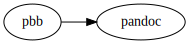
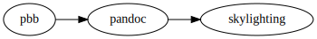
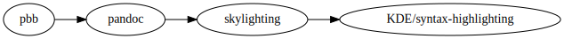
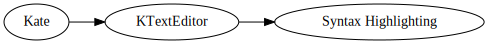

2020-07-01
My open source contributions certainly deserve the label “minor”. I
mostly fix typos when I see them and it’s not too much work; one time, I
added new keywords introduced in Readline 7.0 to the Vim syntax file for
Readline because it bothered me that some of my .inputrc
wasn’t highlighted properly. Which has the fun side effect that my
GitHub user name now floats around in the Vim
GitHub repo (and on many, many machines in
/usr/share/vim/vimXX/syntax/readline.vim). Fame!
Also, one day, I’ll get around to adding the Readline 8.0 keywords. One day.
Eventually, and mostly (okay, completely) by accident, I started specializing in quotes. I noticed a misplaced “smart” quote in an article on the Go blog and fixed it, which later allowed me to say at a Go meetup that I “contributed to Go”.
My latest encounter with quotes and open source was shortly after I’d
finished my summary of The
Art of PostgreSQL. Pandoc supports an extensive list of
languages for code block syntax highlighting, and the code blocks in
that article all use sqlpostgresql.
Something was off, though: opening double quotes looked odd!
I opened an issue for myself so I wouldn’t forget, and let it sit for a month.
Eventually, I had a closer look. The HTML for the highlighted code looked something like
<span class="co">"</span><span class="ot">prev"</span>where co refers to a comment, and ot is for
“other”. The opening double quote was weirdly designated a comment.
Now, pbb uses pandoc to produce its output. I should probably illustrate that with a dot graph…
Accordingly, I opened an issue in pandoc. But, as it turns out, pandoc uses a separate tool for syntax highlighting: skylighting, by the same author, John MacFarlane.
Accordingly, John moved my issue to skylighting, and also immediately pointed out the likely culprit. Skylighting uses KDE XML syntax highlighting descriptions:
The syntax file for PostgreSQL contained this line:
<DetectChar attribute="Comment" context="Identifier" char="""/>And even without knowing much about how these syntax files work, this looked suspicious. John suggested I’d submit a bug report to the KDE project, as skylighting from time to time pulls the latest syntax files from upstream, and he wants to avoid getting out of sync.
I dug happily into how a bug report should be filed for the KDE project and eventually submitted one. And since the fix was likely to be trivial, I read up on syntax highlighting for KatePart (where KatePart is the “text editor component” used by QT and KDE applications).
Today, KDE syntax highlighting1 is its own project. Until 2016, the syntax definitions were part of the KTextEditor project, and before that, until 2014, they were in Kate.
I think a clarifying dot graph is in order2, this time to illustrate the migration of KDE syntax highlighting:
The PostgreSQL syntax file was added in 2002, in this commit, and the line for double quotes looked like this:
<DetectChar attribute="9" context="5" char="""/>where attribute and context are indices
into arrays: both attribute 9 and context 5 are for “identifiers”.
Then, in 2003, somebody cleaned
up the highlighting definitions and modified the line incorrectly to
use attribute="Comment". Ever since then, opening double
quotes have been highlighted as comments around the globe.
The fix was really
just to replace "Comment" with "Identifier" on
that line. John suggested I’d submit a patch to
skylighting with the fix, which would be used in the build process,
until the upstream fix landed.
Now it was just about waiting:
And behold:
select 'foo' "bar";I imagine this is going to make a fundamental difference in the lives of many people.
Fine, it won’t—but it was fun diving into this obscure bit of syntax highlighting history, and I really appreciated how friendly I was treated by all the open source maintainers I interacted with.
KDE is currently migrating from a Phabricator instance to GitLab, but I’ll link to GitHub mirrors because I’m more familiar with navigation there.↩︎
Or maybe I just want to use my new feature.↩︎